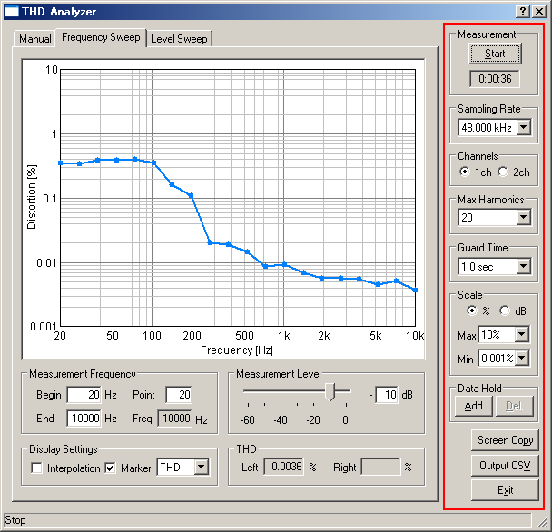

DSSF3 > RA > Reference Manual > THD Analyzer

| Item | Description |
|---|---|
| Measurement | Measurement starts with the [Start] button. Time counter starts when the Start button is clicked and the elapsed time is displayed here during the measurement. The time count lasts until the output is finished. |
| Sampling Rate | This item sets a sampling rate of A/D conversion. |
| Channels | 1ch: One channel (light blue) 2ch: Two channels (light blue and red) |
| Max Harmonics | This item sets the maximum harmonics that can be measured. Higher order enables correct measurement, but the CPU load also becomes high. |
| Guard Time | This item sets a time interval between the output of a measurement signal and the distortion measurement. |
| Scale | This item sets the unit of the distortion (% or dB) and the range of the graph (max and min). |
| Screen Copy | Open a new window to show the graph of the time of clicking. |
| Output CSV | Output the measured data of the THD response to a CSV Format file. |
| Exit | Close the measurement window of the THD Analyzer. |
DSSF3 > RA > Reference Manual > THD Analyzer